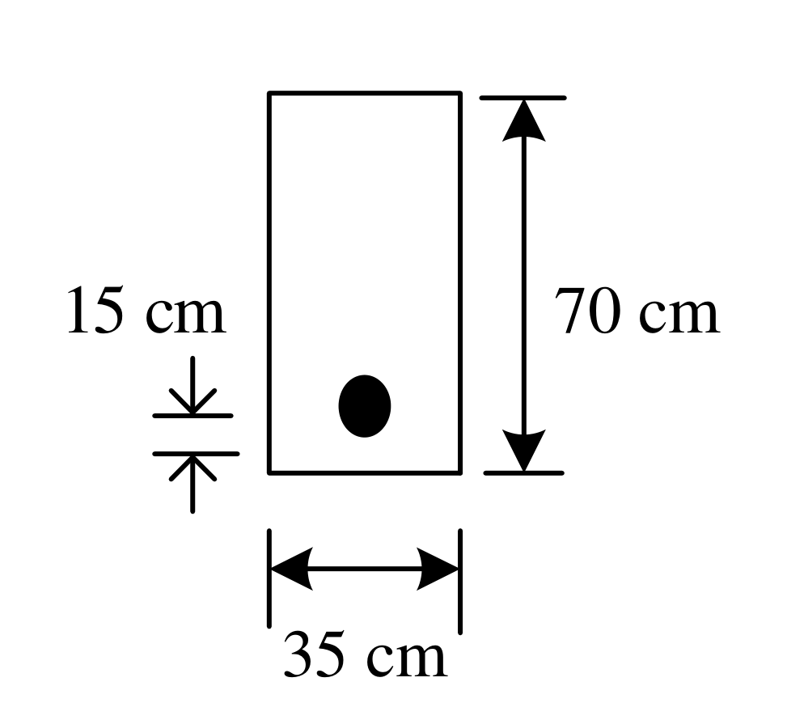
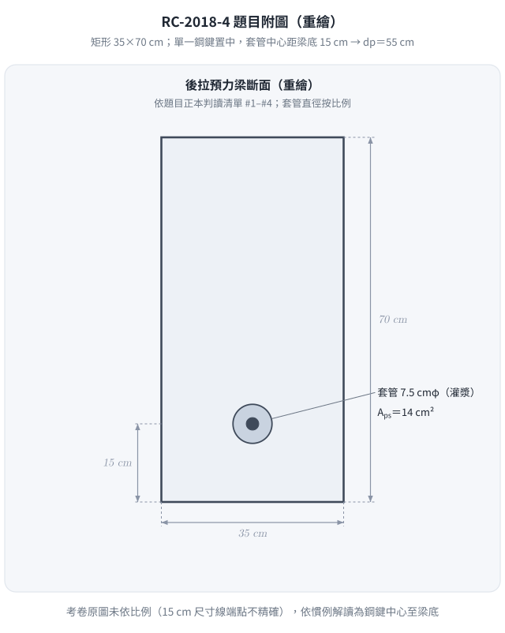
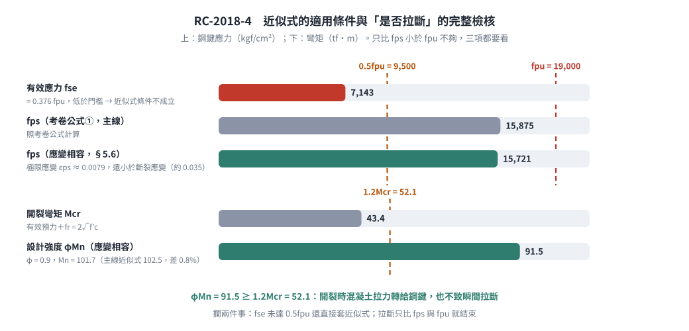

📄 題目正本：考卷原文・附圖・判讀清單（已確認）
RC-2018-4 題目正本
本檔只記錄考卷上寫了什麼、圖上畫了什麼，不含任何解法。解析見同資料夾
RC-2018-4.md。
判讀清單已經使用者確認（凍結）；本檔原則上不再修改（改動須回考卷原圖並記 log）。
| 項目 | 內容 |
|---|---|
| 考卷 | raw/exams/RC-2018_鋼筋混凝土設計與預力.pdf 第 2 頁，第四題；作答規範見第 1 頁 |
| 考年 | 民國 107 年（2018） |
| 配分 | 25 分 |
| 附圖 | RC-2018-4-fig-2.png（矩形斷面，無圖號；2026-11-14 由考卷向量圖 500 dpi 重新擷取）；既有 RC-2018-4-fig-1.png 為同一圖、解析度較低，保留不刪 |
| 判讀狀態 | 已確認（2026-11-14 使用者確認；轉錄 2026-11-14；PyMuPDF 110 dpi 全頁目視＋抽出文字核對，附圖 500 dpi 並讀 PDF 繪圖座標；盲讀後才比對既有解析） |
1. 考卷原文（逐字）
四、如圖所示之後拉法預力梁斷面，預力鋼鍵套管直徑 7.5 cm$\phi$，施預力後以水泥砂漿填滿。預力鋼鍵 $f_{pu}$= 19000 kgf/cm²，混凝土 $f'_c$= 420 kgf/cm²，$E_s$=2×10⁶ kgf/cm²，$E_c$=3.07×10⁵ kgf/cm²，有效預力 $F_e$=100 tf，$A_{ps}$=14 cm²。試求開裂彎矩、極限彎矩並檢核鋼鍵是否被拉斷。（25 分）
參考公式：$f_{pu}\left(1-0.5\rho_p\dfrac{f_{pu}}{f'_c}\right)$，$f_{se}+700+\dfrac{f'_c}{100\rho_p}$
（「鋼鍵」照考卷原文。）
2. 考卷給的公式、附表與參數
- 題文數值：套管直徑 7.5 cm（施預力後灌漿）；$f_{pu}=19{,}000$；$f'_c=420$；$E_s=2\times10^6$；$E_c=3.07\times10^5$ kgf/cm²；$F_e=100$ tf；$A_{ps}=14$ cm²。
- 參考公式兩式（有握裹近似式、無握裹近似式），照錄如上（考卷未寫左邊「$f_{ps}=$」）。
- 第 1 頁作答規範：內政部營建署「混凝土結構設計規範」（內政部 100.6.9 台內營字第 1000801914 號令）；中國土木水利學會「混凝土工程設計規範」（土木 401-100）。未依上述規範作答，不予計分。第 1 頁另列鋼筋資料（D13、D22、D25、D29 的 $d_b$、$A_b$；混凝土 $f'_c$ 280、D10 與 D13 $f_y$ 2800、D25 以上 $f_y$ 4200）屬第一～三題，與本題無關。
- 沒有給：$f_r$、$f_{py}$、鋼鍵斷裂應變或應力-應變曲線、$\varepsilon_{cu}$、$\beta_1$、跨度與載重。
- 卷首注意事項：可以使用電子計算器。不必抄題，作答時請將試題題號及答案依照順序寫在試卷上，於本試題上作答者，不予計分。本科目得以本國文字或英文作答。
3. 附圖

圖面文字照錄：15 cm、70 cm、35 cm。
4. 判讀清單
「把握」標不確定者請優先確認；解讀類項目（題目用字的意思）另標「解讀」。
| # | 項目 | 判讀 | 圖上／題文依據 | 把握 |
|---|---|---|---|---|
| 1 | 鋼鍵深度 | 15 cm 解讀為鋼鍵（套管）中心至梁底 → $d_p = 55$ cm | 圖未依比例：斷面 67.6 pt 代表 70 cm，實心圓心 y＝412.3 距底 11.9 pt（約 12 cm）；15 cm 尺寸的兩條引線在 y＝414.0 與 420.8，兩端都不精確對齊圓心或梁底。依慣例取中心至梁底 | 確定（解讀） |
| 2 | 斷面 | 矩形 $b=35$、$h=70$ cm | 尺寸線兩端對齊斷面外框（x 252.8–286.9、y 356.6–424.2） | 確定 |
| 3 | 鋼鍵水平位置 | 置中（單一鋼鍵） | 實心圓 x 265.6–274.1，圓心 269.85＝斷面中線（PDF 座標） | 確定 |
| 4 | 握裹 | 後拉、施預力後以水泥砂漿灌滿 → 有握裹；開裂彎矩計算時套管已灌漿 | 題文 | 確定（解讀） |
| 5 | 參考公式兩式 | 考卷同時給有握裹式（$1-0.5\rho_p f_{pu}/f'_c$）與無握裹式（$f_{se}+700+f'_c/100\rho_p$），未說明用哪一式 | 題文 | 確定（解讀）（本題灌漿 → 有握裹） |
| 6 | 「檢核鋼鍵是否被拉斷」 | 考卷未給斷裂應變或應力-應變曲線，判斷依據需自行假設 | 題文 | 確定（解讀） |
| 7 | 套管面積 | 直徑 7.5 cm 套管；計算開裂彎矩時是否扣除套管或以變換斷面計算，考卷未說明（給了 $E_s$、$E_c$） | 題文 | 確定（解讀） |
| 8 | 考卷沒有給 | $f_r$、$f_{py}$、斷裂應變、$\varepsilon_{cu}$、$\beta_1$ | 全題 | 確定（作答須自行假設） |
轉錄：2026-11-14（RC-U4-1 題目正本推廣・批 1）
確認：2026-11-14 使用者確認（RC-U4-1 題目正本推廣・批 1，關卡一）
考題編號：RC-2018-4
主分類： RC-U4-1 預力梁斷面應力分析
副分類： 無
設計法： 混合（WSD 開裂彎矩／USD 極限彎矩）
標籤： 後拉法 有黏結 開裂彎矩 極限彎矩 fps公式 Whitney應力塊 鋼鍵拉斷檢核 β1折減
1. 題目（考卷原文見題目正本）
考卷原文、公式／附表、附圖與判讀清單（已確認）見
RC-2018-4-problem.md。本節只列解題時最容易讀錯的地方與本解使用的記號；題意以題目正本為準。

重繪自考卷附圖，依題目正本判讀清單 #1–#4。考卷原圖未依比例，15 cm 依慣例解讀為鋼鍵中心至梁底 → $d_p=55$ cm。
常見誤讀
| 項目 | 正確判讀 | 常見誤讀 |
|---|---|---|
| 鋼鍵深度（#1） | 15 cm 為鋼鍵（套管）中心至梁底，$d_p=55$ cm、$e=20$ cm | 量到套管邊緣 |
| 握裹（#4） | 施預力後灌漿 → 有握裹，用有握裹的 $f_{ps}$ 式 | 用無握裹式 |
| 參考公式（#5） | 考卷兩式並列；本題用第一式，第二式只作對照 | 兩式取大 |
| 拉斷檢核（#6） | 考卷未給斷裂應變，判斷依據須自行假設：極限應變對斷裂應變、$\phi M_n\ge1.2M_{cr}$（見 §5.6） | 只比 $f_{ps}<f_{pu}$ 就結束 |
| 近似式適用條件 | $f_{ps}$ 有握裹近似式須 $f_{se}\ge0.5f_{pu}$；本題 $f_{se}=0.376f_{pu}$ 不符，規範要求改用應變相容（§5.6，$M_n=101.7$，差 0.8%） | 不檢核就直接套式 |
本解記號： $F_e=100$ tf → $f_{se}=F_e/A_{ps}=7{,}143$ kgf/cm²；$E_s=E_p=2\times10^6$、$E_c=3.07\times10^5$ kgf/cm²（考卷給定）。
自行假設（考卷未給）： $f_r$、$\beta_1$、$\varepsilon_{cu}=0.003$ 依規範。
2. 考題核心精神與出題者意圖 (Core Concepts & Examiner's Intent)
核心觀念
本題考察預力梁從開裂到極限的兩個關鍵強度計算：
- 開裂彎矩（$M_{cr}$）：彈性分析，預力在底纖維建立壓應力，外加彎矩需大到足以克服此壓力並引起拉力裂縫。
- 極限彎矩（$M_n$）：非線性分析，鋼鍵應力在極限狀態下超過有效預力（$f_{ps} > f_{se}$），使用 Whitney 應力塊。
- 拉斷檢核：$f_{ps}$ 是否達到 $f_{pu}$——若使用 fps 公式計算後 $f_{ps} < f_{pu}$，表示斷面先達到混凝土壓碎而非鋼鍵拉斷。
本題靈魂：有黏結 vs 無黏結的 $f_{ps}$ 公式選擇——題目提供兩條公式，有黏結用公式①（附著力讓鋼鍵充分發展應力），無黏結用公式②（滑動摩擦限制應力增量）。
出題者意圖
- 考生能區分有黏結/無黏結腱的 $f_{ps}$ 公式適用場景
- 考生能正確計算 Mcr 的預壓應力貢獻（$F_e/A + F_e \cdot e/S_b$）
- 考生記得 $\beta_1$ 隨 $f'_c$ 遞減（f'c = 420 > 280，$\beta_1 < 0.85$）
- 陷阱：偏心距 e 方向、dp vs h 的關係、fr 用 kgf/cm² 或 MPa 公式
3. 解題戰略地圖與陷阱分析 (Strategic Roadmap & Trap Analysis)
作戰計畫
【開裂彎矩 Mcr】
Step 1: 計算斷面性質（A、Ig、Sb）
Step 2: 計算底纖維有效預壓應力 fpe_b
Step 3: 計算混凝土破裂模數 fr = 2√f'c
Step 4: Mcr = Sb × (fpe_b + fr)
【極限彎矩 Mn + 鋼鍵檢核】
Step 5: 計算 fse = Fe / Aps
Step 6: 計算 ρp = Aps / (b × dp)
Step 7: 選擇有黏結公式①求 fps（含拉斷檢核）
Step 8: 計算 β1（f'c = 420 需折減）
Step 9: Whitney 應力塊求 a
Step 10: Mn = Aps × fps × (dp - a/2)
關鍵陷阱
| # | 陷阱 | 應對策略 |
|---|---|---|
| ① | 誤用無黏結公式②（fse + 700 + f'c/100ρp），導致 fps 嚴重低估 | 後拉法 + 水泥砂漿填滿 = 有黏結，必須用公式① |
| ② | 忘記 $\beta_1$ 折減（f'c=420 > 280，β1 = 0.75，非 0.85） | $\beta_1 = 0.85 - 0.05 \times (420-280)/70 = 0.75$ |
| ③ | Mcr 計算時，偏心距 e 符號或方向錯誤 | 鋼鍵在形心以下 → 底纖維為額外壓縮（正向有利） |
| ④ | dp 混淆（從頂算 dp，非 h - e） | $d_p = h - 15 = 55$ cm（從頂面到鋼鍵中心） |
| ⑤ | 直接套 $f_{ps}$ 近似式，不檢核適用條件 | 有握裹近似式須 $f_{se}\ge0.5f_{pu}$；本題 $f_{se}=0.376f_{pu}$ 不符，主線沿用並以應變相容核對（§5.6，$M_n$ 差 0.8%） |
3.5 變數層次分析 (Variable Hierarchy Analysis)
複習提示：第一次解題後，在每個卡住的知識點旁標記
⚠；第二次複習時只看有⚠的項目。
最終目標
求 $M_{cr}$、$M_n$，並確認 $f_{ps} < f_{pu}$（鋼鍵不被拉斷）。
本題關鍵公式（依計算順序）
$$ \text{Step 1:}\quad A = b \cdot h,\quad I_g = \frac{b\,h^3}{12},\quad S_b = \frac{I_g}{y_b} $$
$$ \text{Step 2:}\quad f_{pe,b} = \frac{F_e}{A} + \frac{F_e \cdot e \cdot y_b}{I_g} $$
$$ \text{Step 3:}\quad f_r = 2\sqrt{f'_c}\ \text{(kgf/cm}^2\text{)} $$
$$ \text{Step 4:}\quad M_{cr} = \boxed{S_b} \cdot \!\left(\boxed{f_{pe,b}} + \boxed{f_r}\right) $$
$$ \text{Step 5:}\quad f_{se} = F_e / A_{ps} $$
$$ \text{Step 6:}\quad \rho_p = A_{ps} / (b \cdot d_p) $$
$$ \text{Step 7:}\quad f_{ps} = f_{pu}\!\left(1 - 0.5\,\boxed{\rho_p}\,\frac{f_{pu}}{f'_c}\right) \leq f_{pu} $$
$$ \text{Step 8:}\quad \beta_1 = 0.85 - \frac{0.05(f'_c - 280)}{70} $$
$$ \text{Step 9:}\quad a = \frac{A_{ps} \cdot \boxed{f_{ps}}}{0.85\,f'_c\,b} $$
$$ \text{Step 10:}\quad M_n = A_{ps} \cdot \boxed{f_{ps}} \cdot \!\left(d_p - \frac{\boxed{a}}{2}\right) $$
L1：題目直接給定
| 符號 | 數值 | 說明 |
|---|---|---|
| $b$ | 35 cm | 梁寬 |
| $h$ | 70 cm | 梁深 |
| 鋼鍵距底 | 15 cm | 從圖讀取 |
| $d_p$ | 55 cm | $h - 15$ |
| $A_{ps}$ | 14 cm² | 鋼鍵面積 |
| $F_e$ | 100,000 kgf | 有效預力 |
| $f_{pu}$ | 19,000 kgf/cm² | 鋼鍵極限強度 |
| $f'_c$ | 420 kgf/cm² | 混凝土強度 |
| $E_p$ | 2×10⁶ kgf/cm² | 鋼材彈性模數 |
| $E_c$ | 3.07×10⁵ kgf/cm² | 混凝土彈性模數 |
L2：需知識點推導
【斷面性質（毛斷面）】
| 符號 | 公式 | 卡關? |
|---|---|---|
| $A$ | $35 \times 70 = 2450$ cm² | |
| $y_b = y_t$ | $70/2 = 35$ cm（矩形對稱） | |
| $e$ | $35 - 15 = 20$ cm | |
| $I_g$ | $35 \times 70^3/12 = 1{,}000{,}417$ cm⁴ | |
| $S_b = S_t$ | $I_g/y_b = 28{,}583$ cm³ |
【開裂彎矩計算】
| 符號 | 公式 | 卡關? |
|---|---|---|
| $f_{pe,b}$ | $F_e/A + F_e \cdot e/S_b = 40.82 + 69.97 = 110.79$ kgf/cm² | |
| $f_r$ | $2\sqrt{420} = 40.99$ kgf/cm² | |
| $M_{cr}$ | $S_b \times (f_{pe,b} + f_r) = 28{,}583 \times 151.78$ |
【極限彎矩計算】
| 符號 | 公式 | 卡關? |
|---|---|---|
| $f_{se}$ | $F_e/A_{ps} = 100{,}000/14 = 7{,}143$ kgf/cm² | |
| $\rho_p$ | $A_{ps}/(b \cdot d_p) = 14/(35 \times 55) = 0.007273$ | |
| $f_{ps}$ | 公式①（有黏結）→ 代入計算 | |
| $\beta_1$ | $0.85 - 0.05 \times (420-280)/70 = 0.75$ | |
| $a$ | $A_{ps} \cdot f_{ps}/(0.85 f'_c b)$ | |
| $M_n$ | $A_{ps} \cdot f_{ps} \cdot (d_p - a/2)$ |
L3：深層知識（不懂就卡住）
| 知識點 | 說明 | 卡關? |
|---|---|---|
| 有黏結 vs 無黏結 fps 公式 | 有黏結腱：fps = fpu(1-0.5ρp·fpu/f'c)；無黏結腱：fps = fse + 700 + f'c/(100ρp)（kgf/cm²）。前者 fps 值通常更高 | |
| β1 折減規則 | f'c ≤ 280 kgf/cm²：β1 = 0.85；每增加 70 kgf/cm²，β1 減 0.05；最小值 0.65 | |
| Mcr 底纖維預壓應力兩項 | Fe/A 為均勻預壓，Fe·e·yb/Ig 為彎曲預壓（因偏心）——兩項均為底纖維壓縮，計算時相加 | |
| fps < fpu 的意義 | 表示極限狀態下鋼鍵仍有應力儲備、破壞由混凝土壓碎控制；但它只是必要條件，判斷是否拉斷還要看極限應變對斷裂應變，以及 $\phi M_n\ge1.2M_{cr}$（開裂時不致突然拉斷，見 §5.6） |
4. 步驟化詳細計算過程 (Step-by-Step Detailed Calculation)
━━━━ 第一部分：開裂彎矩 Mcr ━━━━
Step 1：斷面性質（毛斷面）
$$ A = b \times h = 35 \times 70 = 2{,}450\ \text{cm}^2 $$
$$ I_g = \frac{b\,h^3}{12} = \frac{35 \times 70^3}{12} = \frac{35 \times 343{,}000}{12} = \frac{12{,}005{,}000}{12} = 1{,}000{,}417\ \text{cm}^4 $$
$$ y_b = y_t = \frac{h}{2} = 35\ \text{cm} $$
$$ S_b = \frac{I_g}{y_b} = \frac{1{,}000{,}417}{35} = 28{,}583\ \text{cm}^3 $$
幾何關係：
$$
d_p = h - 15 = 70 - 15 = 55\ \text{cm}\qquad e = y_b - 15 = 35 - 15 = 20\ \text{cm}
$$
策略註解： 使用毛斷面（套管 7.5 cm φ，面積 44.2 cm²，僅佔 1.8%，省略影響合理）。
Step 2：底纖維有效預壓應力 $f_{pe,b}$
鋼鍵在形心以下（e = 20 cm），對底纖維產生兩種壓力：
$$ \frac{F_e}{A} = \frac{100{,}000}{2{,}450} = 40.82\ \text{kgf/cm}^2 \quad \text{（均勻軸壓）} $$
$$ \frac{F_e \cdot e}{S_b} = \frac{100{,}000 \times 20}{28{,}583} = \frac{2{,}000{,}000}{28{,}583} = 69.97\ \text{kgf/cm}^2 \quad \text{（偏心彎曲壓力）} $$
$$ \boxed{f_{pe,b} = 40.82 + 69.97 = 110.79\ \text{kgf/cm}^2\ \text{（壓力，正值）}} $$
Step 3：混凝土破裂模數 $f_r$
$$ f_r = 2\sqrt{f'_c} = 2\sqrt{420} = 2 \times 20.494 = \boxed{40.99\ \text{kgf/cm}^2} $$
策略註解： 台灣考試使用 $f_r = 2\sqrt{f'_c}$（kgf/cm²），等效於 ACI 的 $0.623\sqrt{f'_c}$（MPa）。
Step 4：開裂彎矩 $M_{cr}$
開裂條件：底纖維總應力 = 0（考慮 fr 即拉力剛出現）：
$$ f_{pe,b} - \frac{M_{cr}}{S_b} = -f_r \quad\Rightarrow\quad M_{cr} = S_b \cdot \left(f_{pe,b} + f_r\right) $$
$$ M_{cr} = 28{,}583 \times (110.79 + 40.99) = 28{,}583 \times 151.78 $$
$$ \boxed{M_{cr} = 4{,}339{,}300\ \text{kgf·cm} \approx 43.4\ \text{tf·m}} $$
━━━━ 第二部分：極限彎矩 Mn 與鋼鍵檢核 ━━━━
Step 5：有效鋼鍵應力 $f_{se}$
$$ f_{se} = \frac{F_e}{A_{ps}} = \frac{100{,}000}{14} = 7{,}143\ \text{kgf/cm}^2 $$
Step 6：預力鋼筋比 $\rho_p$
$$ \rho_p = \frac{A_{ps}}{b \cdot d_p} = \frac{14}{35 \times 55} = \frac{14}{1{,}925} = 0.007273 $$
Step 7：極限狀態鋼鍵應力 $f_{ps}$（有黏結腱公式）
本梁為後拉法 + 水泥砂漿灌滿 → 有黏結（bonded）後拉腱 → 考卷參考公式①。
適用條件： 規範的有握裹近似式須 $f_{se}\ge0.5f_{pu}$。本題 $f_{se}=7{,}143=0.376f_{pu}<0.5f_{pu}=9{,}500$，條件不成立；以下主線仍照考卷公式計算，並在 §5.6 以應變相容核對（$f_{ps}=15{,}721$、$M_n=101.7$ tf·m，差 0.8%）。
使用公式①：
$$ f_{ps} = f_{pu}\!\left(1 - 0.5\,\rho_p\,\frac{f_{pu}}{f'_c}\right) $$
$$ = 19{,}000 \times \left(1 - 0.5 \times 0.007273 \times \frac{19{,}000}{420}\right) $$
$$ = 19{,}000 \times \left(1 - 0.5 \times 0.007273 \times 45.24\right) $$
$$ = 19{,}000 \times \left(1 - 0.5 \times 0.3290\right) $$
$$ = 19{,}000 \times (1 - 0.1645) = 19{,}000 \times 0.8355 $$
$$ \boxed{f_{ps} = 15{,}875\ \text{kgf/cm}^2} $$
鋼鍵拉斷檢核：
$$ f_{ps} = 15{,}875\ \text{kgf/cm}^2 \quad < \quad f_{pu} = 19{,}000\ \text{kgf/cm}^2 $$
$$ \boxed{\therefore\ \text{鋼鍵}\textbf{不被拉斷} \checkmark} $$
只比 $f_{ps}<f_{pu}$ 還不夠：完整的拉斷檢核另需極限應變對斷裂應變（$\varepsilon_{ps}\approx0.008$ ≪ 約 0.035）與 $\phi M_n=91.5\ge1.2M_{cr}=52.1$ tf·m，見 §5.6。
策略註解： 若誤用公式②（無黏結腱）：$f_{ps} = 7143 + 700 + 420/(100 \times 0.007273) = 8{,}421$ kgf/cm²（比正確值低 47%），極限彎矩將嚴重低估。兩公式差異巨大，選錯公式會造成根本性錯誤。
與 fse 比較（合理性驗證）：
$$
f_{se} = 7{,}143 < f_{ps} = 15{,}875 < f_{pu} = 19{,}000 \quad \checkmark
$$
Step 8：應力塊折減係數 $\beta_1$
$$ \beta_1 = 0.85 - \frac{0.05 \times (f'_c - 280)}{70} = 0.85 - \frac{0.05 \times (420 - 280)}{70} = 0.85 - \frac{0.05 \times 140}{70} $$
$$ = 0.85 - 0.05 \times 2 = 0.85 - 0.10 = \boxed{0.75} $$
Step 9：Whitney 等值矩形應力塊深度 $a$
$$ a = \frac{A_{ps} \cdot f_{ps}}{0.85\,f'_c\,b} = \frac{14 \times 15{,}875}{0.85 \times 420 \times 35} = \frac{222{,}250}{12{,}495} = \boxed{17.79\ \text{cm}} $$
中性軸深度：
$$
c = \frac{a}{\beta_1} = \frac{17.79}{0.75} = 23.72\ \text{cm}
$$
驗核（中性軸在斷面內）：
$$
c = 23.72\ \text{cm} < h = 70\ \text{cm} \quad \checkmark
$$
$$ \frac{c}{d_p} = \frac{23.72}{55} = 0.431 < 1.0 \quad \checkmark $$
Step 10：極限彎矩 $M_n$
$$ M_n = A_{ps} \cdot f_{ps} \cdot \left(d_p - \frac{a}{2}\right) $$
$$ = 14 \times 15{,}875 \times \left(55 - \frac{17.79}{2}\right) $$
$$ = 222{,}250 \times (55 - 8.895) $$
$$ = 222{,}250 \times 46.105 $$
$$ \boxed{M_n = 10{,}246{,}000\ \text{kgf·cm} \approx 102.5\ \text{tf·m}} $$
最終結果彙整
| 求解項目 | 結果 |
|---|---|
| 開裂彎矩 $M_{cr}$ | 43.4 tf·m |
| 鋼鍵應力 $f_{ps}$ | 15,875 kgf/cm² |
| 極限彎矩 $M_n$ | 102.5 tf·m |
| 鋼鍵是否拉斷？ | 否：$f_{ps}<f_{pu}$，極限應變 $\varepsilon_{ps}\approx0.008$ 遠小於斷裂應變，且 $\phi M_n=91.5\ge1.2M_{cr}=52.1$ tf·m（見 §5.6） |
強度裕度比（極限/開裂）：
$$
\frac{M_n}{M_{cr}} = \frac{102.5}{43.4} = 2.36 \quad \text{（極限強度為開裂強度的 2.36 倍）}
$$
5. 關鍵爭議點與進階探討 (Critical Issues & Advanced Discussion)
5.1 有黏結 vs 無黏結：fps 公式選擇
| 特性 | 有黏結（本題） | 無黏結 |
|---|---|---|
| 灌漿 | ✅ 水泥砂漿填滿 | ❌ 套管不填漿 |
| $f_{ps}$ 公式 | $f_{pu}(1-0.5\rho_p f_{pu}/f'_c)$ | $f_{se} + 700 + f'c/(100\rho_p)$ |
| 本題計算結果 | 15,875 kgf/cm² | 8,421 kgf/cm² |
| 物理意義 | 附著力傳遞→局部應變大→fps高 | 整體平均應變增量→fps低 |
結論：選錯公式，極限彎矩誤差高達 47%。
5.2 Mcr 的精確計算（是否扣除套管面積）
本題使用毛斷面簡算。若用淨斷面：
- 套管面積 $A_{duct} = \pi(7.5/2)^2 = 44.2$ cm²（佔總面積 1.8%）
- 形心偏移：往上移 $\approx 0.4$ cm（影響甚微）
- $M_{cr}$ 修正量 < 2%
→ 考場使用毛斷面即可，誤差在合理範圍。
5.3 鋼鍵拉斷的物理意義
若極限彎矩計算時 $f_{ps} = f_{pu}$，則鋼鍵在達到 $M_n$ 前即拉斷，屬脆性破壞（不安全設計）。
本題 $f_{ps}/f_{pu} = 15875/19000 = 0.836$，表示斷面在極限狀態下：
- 混凝土先達到極限壓應變（0.003）→ 延性破壞 ✓
- 鋼鍵尚有 16.4% 的強度裕量（仍在彈性範圍延伸）
5.4 為何 $f_{ps} > f_{se}$ 合理？
有效預力時：$f_{se} = 7143$ kgf/cm²（鋼鍵受拉）
極限狀態時：$f_{ps} = 15875$ kgf/cm²（鋼鍵繼續被拉伸）
在外加彎矩作用下，截面變形使鋼鍵進一步伸長，因為黏結傳力使得局部應變增量很大，故 fps >> fse。這是有黏結腱的核心特性。
5.5 彈性模數比（模數比）
$$ n = \frac{E_p}{E_c} = \frac{2 \times 10^6}{3.07 \times 10^5} = 6.51 $$
題目給的 Es、Ec 主要用於彈性分析（如計算開裂前的應力分布或使用換算斷面法），本題 Mcr 計算中未直接用到，但需注意這組數值是確認材料特性用。
5.6 近似式的適用條件與拉斷檢核（2026-11-14 補）
① $f_{se}\ge0.5f_{pu}$ 不成立 → 近似式不適用
規範的有握裹 $f_{ps}$ 近似式（考卷參考公式第一式）只在 $f_{se}\ge0.5f_{pu}$ 時可用。本題
$$f_{se} = \frac{100{,}000}{14} = 7{,}143 = 0.376\,f_{pu} < 0.5f_{pu} = 9{,}500\ \text{kgf/cm}^2$$
依現行建築物混凝土結構設計規範（2023），應改以應變相容求 $f_{ps}$：
- $\varepsilon_1 = f_{se}/E_s = 7143/(2\times10^6) = 0.00357$
- $\varepsilon_2 = \dfrac{F_e}{AE_c}\left(1+\dfrac{e^2}{r^2}\right) = \dfrac{100{,}000}{2450\times3.07\times10^5}\left(1+\dfrac{400}{408.3}\right) = 0.00026$
- $\varepsilon_3 = 0.003(d_p-c)/c$；以 $0.85f'_c\beta_1 bc = A_{ps}f_{ps}$（$\beta_1=0.75$）疊代
得 $c = 23.5$ cm、$a = 17.6$ cm、$\varepsilon_{ps} = 0.00786$。此應變仍在鋼鍵彈性段（低鬆弛鋼絞線約至 0.0086），所以 $f_{ps} = E_s\varepsilon_{ps} = 15{,}721$ kgf/cm²，與應力-應變曲線的非線性段形狀無關：
$$M_n = 14\times15{,}721\times(55 - 17.6/2) = 101.7\ \text{tf·m}$$
與主線近似式結果 102.5 tf·m 只差 0.8%，主線答案可用；但作答時應寫出「$f_{se}<0.5f_{pu}$，近似式條件不成立，以應變相容核對」。（若改用現行 $\gamma_p$：$\gamma_p/\beta_1 = 0.28/0.75$ 得 106.5、$0.40/0.75$ 得 101.4 tf·m，均在 ±5% 內。）
② 鋼鍵是否被拉斷：兩項檢核
- 極限應變：$\varepsilon_{ps}\approx0.008$，遠小於鋼絞線最小斷裂伸長率（約 0.035），$f_{ps}<f_{pu}$ → 不會拉斷。
- 開裂即斷的風險：若 $M_n$ 比 $M_{cr}$ 小，梁一開裂、混凝土拉力轉給鋼鍵，鋼鍵會瞬間拉斷。規範因此要求有握裹預力構材 $\phi M_n \ge 1.2M_{cr}$：$\phi M_n = 0.9\times101.7 = 91.5 \ge 1.2\times43.4 = 52.1$ tf·m ✓（$M_n/M_{cr}=2.34$）。

圖 1 近似式適用條件與拉斷的三項檢核。$f_{se}$ 沒過 $0.5f_{pu}$ 的門檻線、$\phi M_n$ 過了 $1.2M_{cr}$——這張圖攔兩個錯：$f_{se}$ 未達 $0.5f_{pu}$ 還直接套近似式，以及拉斷只比 $f_{ps}<f_{pu}$ 就結束。
驗算狀態： unverified
手寫補充： 無
修正日期：2026-11-14（§1 改為指向題目正本，重繪題目附圖 figs/RC-2018-4-fig-1-problem.svg）
修正日期：2026-11-14（解析勘誤（數值不變）：補 §5.6——$f_{se}=0.376f_{pu}<0.5f_{pu}$，有握裹 $f_{ps}$ 近似式不適用，依現行台灣規範（建築物混凝土結構設計規範 2023）以應變相容核對 $M_n=101.7$ tf·m（主線 102.5，差 0.8%）；拉斷檢核補極限應變與 $\phi M_n\ge1.2M_{cr}$；§1 常見誤讀同步；verify 腳本重算 MISMATCHES: 0）
修正日期：2026-11-14（解析勘誤（數值不變）：落實檢查殘留——§4 Step 7 補 $f_{se}\ge0.5f_{pu}$ 適用條件說明與完整拉斷檢核指引、最終彙整表拉斷判據改為三項並指向 §5.6；§3 陷阱表補 ⑤；§3.5 L3「fps < fpu 的意義」改寫）
圖解補繪：2026-11-14（向量圖 1 張 figs/RC-2018-4-fig-2-checks.svg，腳本 gen_RC-2018-4.py，可重跑；腳本檔尾對 §4／§5 公佈值做 assert）
修正日期：2026-11-15（非勘誤）分類標頭依 wiki/queries/分類稽核-RC-2026-11-15.md 調整：設計法改 混合；解析內容與答案未改